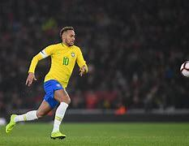

Learn how to use your every surface of your foot as you learn to play soccer. If you are quickly dribbling, then you are likely using the front of your foot at the instep. If you’d like to dribble better, the outside and the inside of your foot must be used. This technique enables you to direct the ball in a direction away from any defensive pressure and gives more control.
Take Responsibility for Your Improvement
Soccer is one of the most popular sports in the world. Millions of people enjoy watching soccer and millions love playing it. But training for soccer, which is free-flowing and played with only one rest break, is not as simple as running for long distances 2-3 times a week. Different positions can gain different things from their workout, and should learn how to best train for soccer to become the best players. Need upper/lower body strength and sprinting seed. Rarely required to jog or run for long, continuous times, they need to be able to get to every ball and win it in the air or on the ground. Need to be able to run for days. They should have exceptional stamina and above-average speed. Quickness and strong foot skills are a must. Soccer Training Drills for Speed, Control and Agility. if you think you’re perfect already, then you never will be.” That quote from Cristiano Ronaldo sums up why he dominates on a soccer field. From Ronaldo to Messi, Neymar and Mbappe, the game's greatest players possess an unrelenting desire to learn new techniques and put in long hours at the training field.
the best tips are to watch video they would give you even more tips and would be even easier.
here are some of the best players in the wolrd these players really changed the way of futbol.
:Soccer legend Pelé became a superstar with his performance in the 1958 World Cup. Pelé played professionally in Brazil for two decades, winning three World Cups along the way, before joining the New York Cosmos late in his career. Named FIFA co-Player of the Century in 1999, he is a global ambassador for soccer and other humanitarian causes.
:Neymar came into prominence at Santos, where he made his professional debut aged 17. He helped the club win two successive Campeonato Paulista championships, a Copa do Brasil, and the 2011 Copa Libertadores; the latter being Santos' first since 1963. Neymar was twice named the South American Footballer of the Year, in 2011 and 2012, and soon relocated to Europe to join Barcelona. As part of Barcelona's attacking trio with Lionel Messi and Luis Suárez, he won the continental treble of La Liga, the Copa del Rey, and the UEFA Champions League, and finished third for the FIFA Ballon d'Or in 2015 for his performances. He then attained a domestic double in the 2015–16 season. Motivated to be a talisman at club level, Neymar transferred to PSG in 2017 and was handed the number 10 jersey.[9] The move cost €222 million, making him the most expensive player ever.[note 1] In France, he won four league titles, among other honours, and was voted Ligue 1 Player of the Year in his debut season.[12] Notably, he helped PSG attain a domestic quadruple in the 2019–20 season, and led the club to its first ever Champions League Final. Neymar currently stands as PSG's sixth-highest-goalscorer of all time and seventh-highest-assister of all time.
Messi was born on June 24, 1987, in Rosario, Argentina. As a young boy, Messi tagged along when his two older brothers played soccer with their friends, unintimidated by the bigger boys. At the age of 8, he was recruited to join the youth system of Newell's Old Boys, a Rosario-based club.
